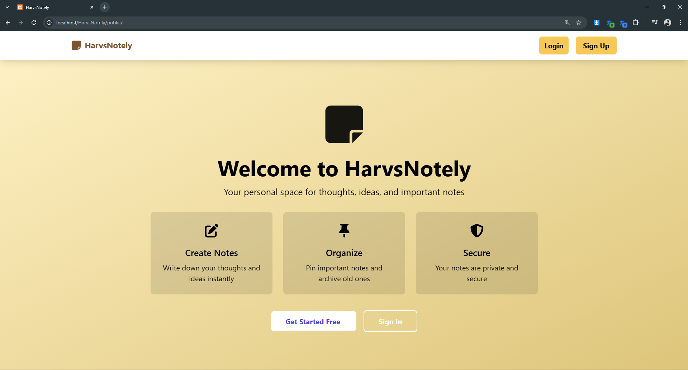
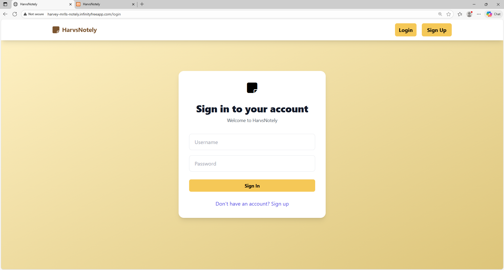
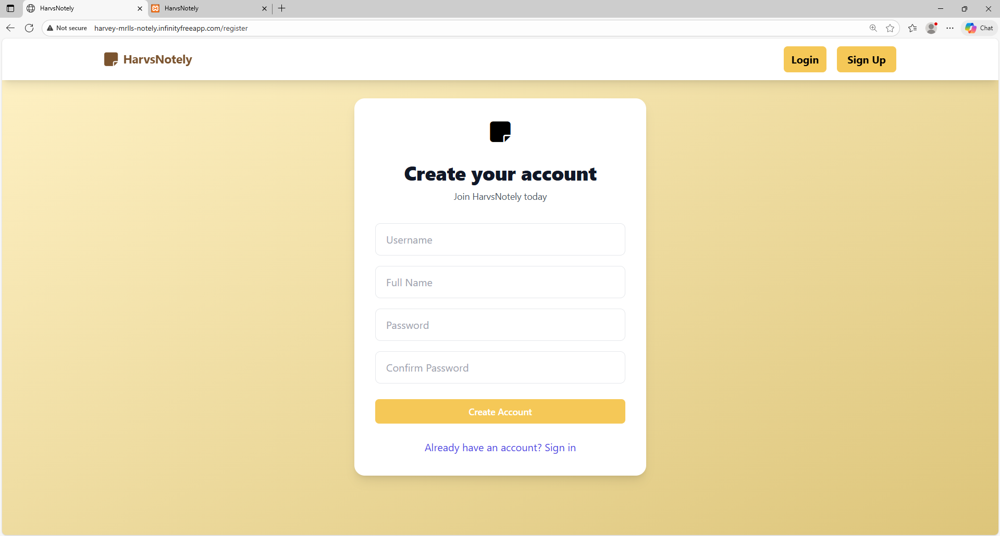
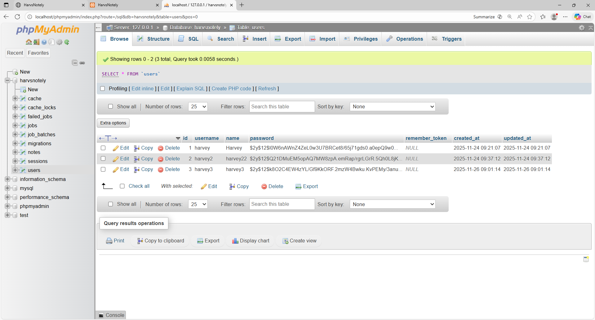

HarvsNotely empowers you to note everything securely, your ideas, memories,
and important information. You can easily categorize, pin important notes, and archive older entries.
×
Welcome Page

Login Page

Signup Page

Dashboard Page
Modal Notes full Preview
Create New Note
Edit Existing Note
Archived Note Page
Database Management

Harvsnotely Complete Workflow Summary
1. Authentication & Entry
User accesses website → welcome.blade.php loads with hero section
User chooses between:
Login: Existing credentials verification via AuthController@login
Signup: New account creation with username uniqueness check via AuthController@register
Successful authentication creates user session and redirects to dashboard
User redirected to main notes dashboard → notes.index.blade.php
2. Note Management Dashboard
Dashboard displays two main sections:
Pinned Notes: Notes marked as important with red border indicators
All Notes: Complete collection of user's notes
Each note card shows:
Title (limited to 30 characters)
Content preview (150 characters)
Creation date
Color-coded background
Action buttons (Pin, Edit, Archive, Delete)
"New Note" button triggers note creation workflow
3. Note Creation & Editing
Create Note:
User clicks "New Note" → notes.create.blade.php loads
Form includes: Title (required), Content (required), Color selection, Pin option
Submission triggers NoteController@store
Data validation and storage in MySQL database
Redirect back to dashboard with success message
Edit Note:
User clicks edit icon → notes.edit.blade.php loads
Authorization check ensures user owns the note
Form pre-filled with existing note data
Submission triggers NoteController@update
4. Interactive Note Operations
Pin/Unpin Notes:
Click pin icon → NoteController@togglePin
Toggles is_pinned field in database
Pinned notes appear in special section with red accent